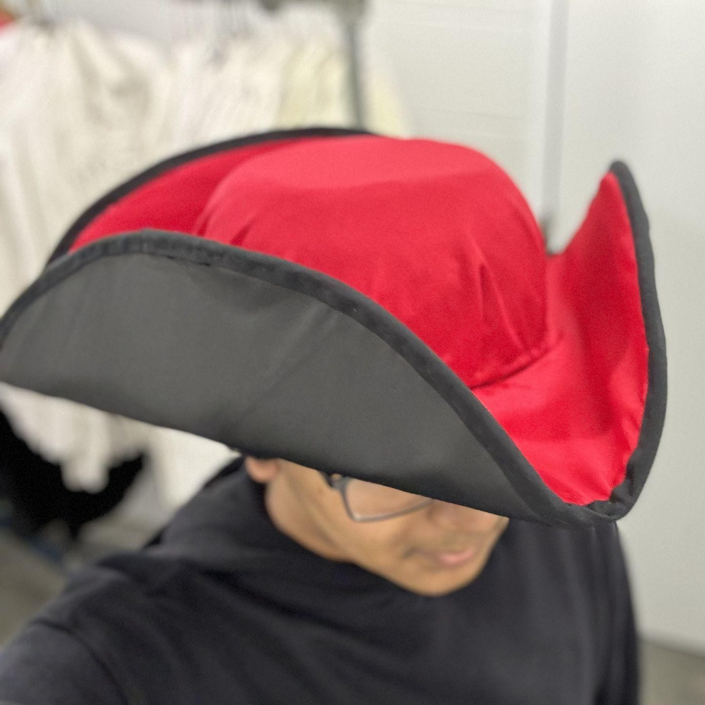

Where form does more than follow function
I am a Mechanical Engineering Honors sophomore at UT Austin focused on product design engineering and mechatronics. My strength lies in bridging mechanical engineering with industrial form, so products are aesthetically refined without compromising function. This atelier is where purposeful design thinking meets engineering rigor, turning product concepts into beautiful, functional products engineered for the physical world.
Engineering Projects
These are functional engineering projects I designed and developed at UT Austin to solve practical mechanical challenges. Click any card to learn more about how each system was engineered and built.

Scratch 1:10 Scale RC Vehicle
Designed and 3D printed a 1:10 scale car from scratch to explore vehicle dynamics, mechanical powertrain, and integrated electronics.

Active Deodorizing Hamper
Uses continuous forced airflow to circulate through sweaty clothes, stopping odor and bacterial buildup before smells can settle in.

Atmospheric Water Harvester Stand
Redesigned a fragile acrylic stand into a sturdy steel and PLA quad-pod to securely support a water harvesting cartridge on uneven outdoor terrain.

The Borrow Box Dispenser
Designed an automated pencil dispenser during a 48-hour makeathon to eliminate classroom interruptions through a simple, verifiable student checkout system.
Design Projects
These are the design projects I created as a technical theatre student at my performing arts high school. While I specialized in scenic design, I loved branching out across the entire technical production world. Scroll horizontally to check out the work.

Let the Right One In
Ominous 1980s Chicago setting featuring a structural "L" train trestle, rolling playground unit, and tall atmospheric birch trees.

No No Nanette
Vibrant 1920s Art Deco beach-club environment framing dual center-stage baby grand pianos beneath sweeping custom arches.

Hadestown Scenic Concept
Industrial jazz-age thrust stage concept featuring a rising center turntable and a rolling train track integrated directly into the stage floor.

Axoloris The Musical Identity
1970s neo-expressionist visual campaign contrasting industrialism and eco-futurism, spanning playbills, release schedules, and posters.

Puppetry & Fabrication
Clay-sculpted papier-mache Commedia dell'arte masks alongside an articulated squirrel puppet built with internal hinge linkages.

The Servant of Two Masters
Vibrant lighting design using saturated color palettes and cyclorama washes to drive fast-paced commedia dell'arte scenes.

Model Making & Projections
Scale architectural models constructed from Bristol board and projection-mapped with QLab to cast dynamic light textures.

Scenic Painting & Color Theory
Large-scale surface finishes applying scumbling, chromatic black mixing, tint and shade studies, and atmospheric color theory.

Costume Crafts & Millinery
Wired buckram and Fosshape tricorne hat construction, precision darting on industrial stitchers, and rapid materials styling.

Stage Fly Rail: The Prom
Counterweight arbor fly rail operation and rigging safety for all-school musical, coordinating real-time dynamic scenery fly cues.

2D Drafting & Graphic Design
Graphic design, textures, and promotional poster art in Photoshop, alongside precision 2D scenic drafting and layout cut sheets in AutoCAD.
Experience & Skills
A look into my engineering work outside the classroom, highlighting my industry internship and collegiate design teams alongside the practical technical skills I use to build my projects.
- Collaborated directly with R&D engineers to design a natural gas engine test cell, managing system requirements, bill of materials (BOM), and vendor sourcing.
- Executed physical modifications to generator enclosures for filtration upgrades and reconfigured internal control panel wiring.
- Drafted comprehensive Standard Operating Procedures (SOPs) and gained hands-on exposure to the entire product development lifecycle.
- Researched COTS and custom gearbox feasibility, analyzing gear ratio optimization curves for UT's off-road competition vehicle.
- Co-authored powertrain technical research documentation detailing gear tooth contact stresses and packaging constraints.
- Assisted team members in the shop with final vehicle assembly, getting direct exposure to full vehicle packaging as a new team member.
- Conducting targeted user research and market analysis to identify everyday problems that can be solved through user-centered engineering.
- Collaborating across a year-long product development process spanning ergonomic modeling, design reviews, and iterative physical testing.
- Designed structural support hardware for atmospheric water harvesting prototypes in Dr. Guihua Yu's materials research lab.
- Replaced brittle acrylic parts with a quad-pod steel rod assembly, increasing the base footprint by 62% on uneven terrain.
- Lead a first-year engineering cohort through weekly seminars focused on university resources, time management, and professional growth.
- Cultivate a welcoming environment for students to connect and adjust to college life, reinforced by individual check-ins to support their transition.
Education
Clubs & Organizations
Tools & Technical Skills
Engineering CAD & Modeling
Prototyping & Machining
Electronics & Programming
Honors & Awards
Get in Touch!
I'm always open to conversations about product design engineering and interesting hardware ideas!